<!DOCTYPE html>
<html>
  <head>
    <meta charset="utf-8">
    <meta name="viewport" content="initial-scale=1, maximum-scale=1, user-scalable=no, width=device-width">
    <title>InjectingApp</title>

    <link href="lib/ionic/css/ionic.css" rel="stylesheet">
    <link href="css/style.css" rel="stylesheet">

    <!-- IF using Sass (run gulp sass first), then uncomment below and remove the CSS includes above
    <link href="css/ionic.app.css" rel="stylesheet">
    -->

    <!-- ionic/angularjs js -->
    <script src="lib/ionic/js/ionic.bundle.js"></script>
    
    

    <!-- cordova script (this will be a 404 during development) -->
    <script src="cordova.js"></script>
    
    <!-- your app's js -->
    <script src="js/app.js"></script>
    <script src="js/services.js"></script>

    
  </head>
  <body ng-app="injectingApp" >
      <ion-nav-bar class="bar-positive">
        <ion-nav-back-button>
        </ion-nav-back-button>
      </ion-nav-bar>
             
    <ion-nav-view></ion-nav-view>

    <script id="templates/tabs.html" type="text/ng-template">
      <ion-tabs class="tabs-icon-top tabs-positive">

        <ion-tab title="Cuerpo" icon="ion-ios-body" href="#/tab/home">
          <ion-nav-view name="home-tab"></ion-nav-view>
        </ion-tab>
        
        <ion-tab title="Camara" icon="ion-android-camera" href="#/tab/camera">
          <ion-nav-view name="camera-tab"></ion-nav-view>
        </ion-tab>

        <ion-tab title="Info" icon="ion-ios-information" href="#/tab/about">
          <ion-nav-view name="about-tab"></ion-nav-view>
        </ion-tab>

        <ion-tab title="Contacto" icon="ion-ios-world" ui-sref="tabs.contact">
          <ion-nav-view name="contact-tab"></ion-nav-view>
        </ion-tab>

      </ion-tabs>
    </script>

    <script id="templates/home.html" type="text/ng-template">
      <ion-view view-title="InjectionApp">
        <ion-content class="padding">
            <p>
                Elige una parte del cuerpo para ver mas información sobre como inyectar en la parte seleccionada.
            </p>
          <p>
            <a class="button icon icon-right ion-chevron-right" href="#/tab/deltoide">Deltoide (Hombro)</a>
          </p>
          <p>
            <a class="button icon icon-right ion-chevron-right" href="#/tab/muslo">Vasto lateral (Muslo)</a>
          </p>
          <p>
            <a class="button icon icon-right ion-chevron-right" href="#/tab/gluteo">Gluteos</a>
          </p>
        </ion-content>
      </ion-view>
    </script>

    <script id="templates/deltoide.html" type="text/ng-template">
      <ion-view view-title="Deltoide (Hombros)">
        <ion-content class="padding">
          <h3>Inyectar en Hombros</h3>
          <p> No debe de usarse si la persona está muy delgada o el músculo es muy pequeño.</p>
          <p>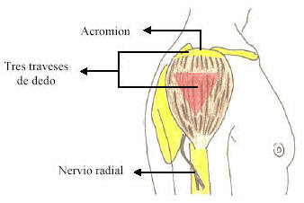</p>
          <h4>Ejemplos prácticos</h4>
          <p>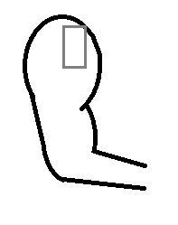</p>
          <p>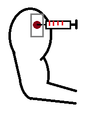</p>
          <p>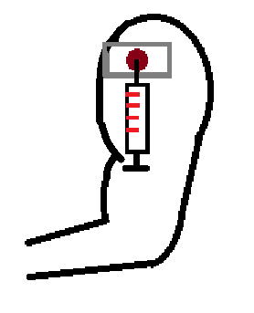</p>
        </ion-content>
      </ion-view>
    </script>
    
    <script id="templates/muslo.html" type="text/ng-template">
      <ion-view view-title="Vasto lateral (Muslo)">
        <ion-content class="padding">
          <h3>Inyectar en Muslo</h3>
          <p> Para niños menores de tres años. Dividiremos el muslo en tres partes iguales y pincharemos en el central.</p>
         <p>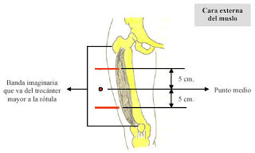</p>
         <h4>Ejemplos prácticos</h4>
         <p>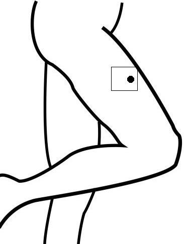</p>
         <p>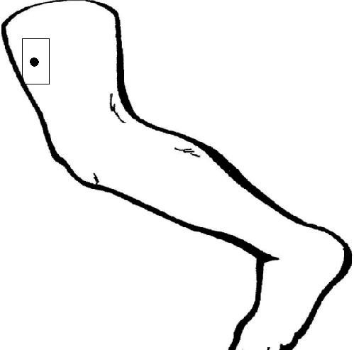</p>
         <p>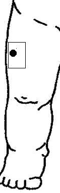</p>
        </ion-content>
      </ion-view>
    </script>
    
    <script id="templates/gluteo.html" type="text/ng-template">
      <ion-view view-title="Gluteos">
        <ion-content class="padding">
          <h3>Inyectar en Gluteos</h3>
          <p>Trazaremos dos líneas imaginarias en horizontal y otra en vertical en un glúteo, de tal forma que formemos cuatro cuadrantes; pincharemos en el cuadrante superior-externo para evitar tocar el nervio ciático. El contacto con el nervio ciático equivaldría a un fuerte dolor durante varios días. No utilice esta zona para niños inferiores a tres años, su musculatura aquí no está aun bien desarrollada.</p>
          <p>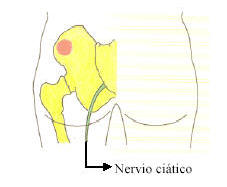</p>
          <h4>Ejemplos prácticos</h4>
          <p>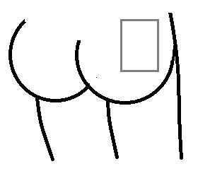</p>
          <p>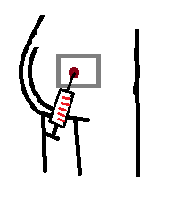</p>
          <p>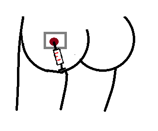</p>
          
        </ion-content>
      </ion-view>
    </script>

    <script id="templates/camera.html" type="text/ng-template">
      <ion-view view-title="Tomar Foto">
        <ion-content class="padding">
            <!--<label class="item item-input">
            <span class="input-label">Url</span>
            <input id="txtUrl" type="text">
        </label>-->
            <button ng-click="getPhoto()" class="button button-block button-primary">Tomar Foto</button>
            <canvas id="Canvas" width="300" height="300" style="max-width: 100%"></canvas>
        <!---->
        </ion-content>
      </ion-view>
    </script>

    <script id="templates/about.html" type="text/ng-template">
      <ion-view view-title="Info">
        <ion-content class="padding">
          <h3>Técnica de inyección muscular</h3>
          <!--Images-->
          <p>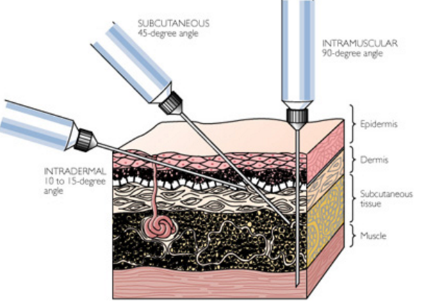</p>
          <p>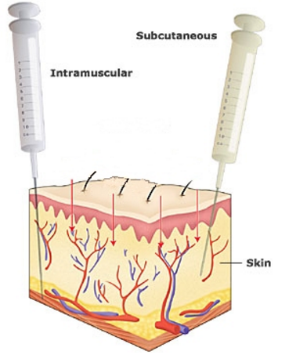</p>
          <p>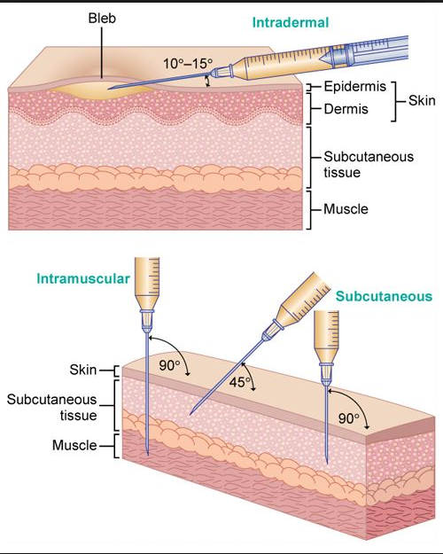</p>
          <h4>Procedimiento</h4>
          <p>1) Preparar sobre un paño limpio el material que vamos a usar.</p>
          <p>2) Lavar las manos con jabón y agua abundante. Podemos añadir antiséptico de mano y dejar secar.</p>
          <p>3) Colocar guantes.</p>
          <p>4) Verificar estado de la medicación, fecha de caducidad.</p>
          <p>5) Preparar la medicación: - Algunas vienen listas para aspirar directamente sin necesidad de reconstruir la mezcla.
                                 -Otras vienen dos partes, una ampolla de disolvente con suero salino o lidocaina (anestesia) y un vial o recipiente de cristal con un tapón fijo de caucho que lleva la medicación en sí./p>
          <p>6) Colocar al paciente cómodo y explicarle el procedimiento de la técnica; indicarle que será algo rápido y que necesitas que mantenga el músculo relajado e inmovilizado porque así sentirá menos dolor.</p>
          <p>7) Asegurarnos que expulsamos totalmente el aire de la jeringa.</p>
          <p>8) Desinfectar la zona donde vamos a pinchar con alcohol 70º (preferible usar suero salino fisiológico en caso de inyectar una vacuna).</p>
          <p>9) Introducir de forma decidida y rápida la aguja en la piel porque de esta manera será menos dolorosa. Dirección de la aguja --> 90º respecto de la piel.</p>
          <p>10) Cuando se haya insertado toda la aguja debemos aspirar tirando del émbolo para asegurarnos de no haber alcanzado un vaso sanguíneo. Si el cono de la aguja se llenase de rojo, significaría que esta en torrente sanguíneo y tendríamos que retirar la aguja 1/3 de la misma y reintroducirla hacia otra dirección.</p>
          <p>11) Inyectar lentamente el líquido.</p>
          <p>12) Sacar la aguja una vez terminemos. Al sacar la aguja tendremos precaución porque puede salir sangre del punto de punción a causa de la irrigación del tejido muscular. No apresurarse a limpiar la sangre, antes hay que asegurarse que hemos desechado la aguja para no pincharnos.</p>
          <p>13) Desechar material utilizado. Las agujas irán a un contenedor amarillo específico para objetos punzantes que pasarán a ser incinerados.</p>
          
          <!--<p>
            <a class="button icon icon-right ion-chevron-right" href="#/tab/navstack">Tabs Nav Stack</a>
          </p>-->
        </ion-content>
      </ion-view>
    </script>


    <script id="templates/contact.html" type="text/ng-template">
      <ion-view title="Contacto">
        <ion-content>
          <div class="list">
            <div class="item">
              @Edgar Jonathan Huitrón Alanís 1553055
            </div>
            <div class="item">
              @Maximiliano Gonzalez Ramírez 1515827
            </div>
            <div class="item">
              @Guillermo Alfonso Ríos Ibarra 1525993
            </div>
            <div class="item">
              @Rogelio Garza Gonzáles 1568266
            </div>
            <div class="item">
                @María de Lourdes Rosas Díaz 1391246
            </div>
            <div class="item">
                @César Aarón Rodríguez Nerio 1566173
            </div>
          </div>
        </ion-content>
      </ion-view>
    </script>
  </body>
</html>
